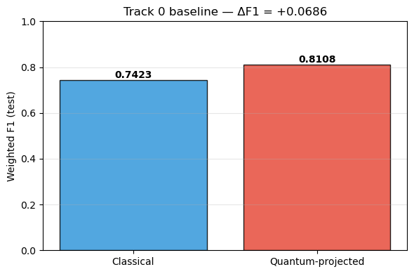
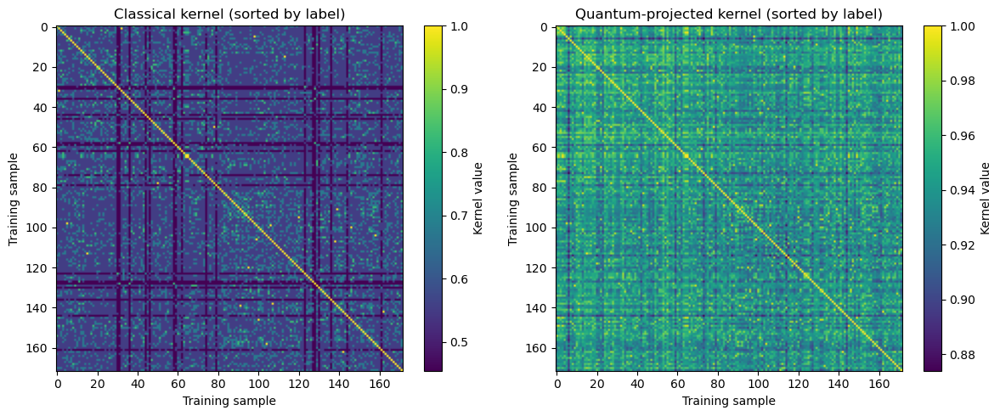
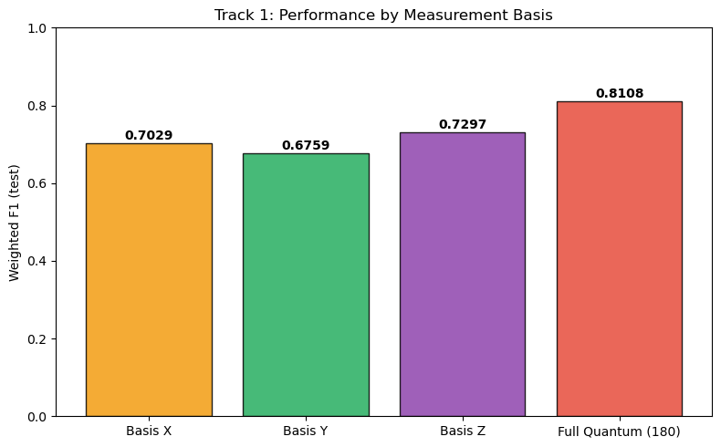
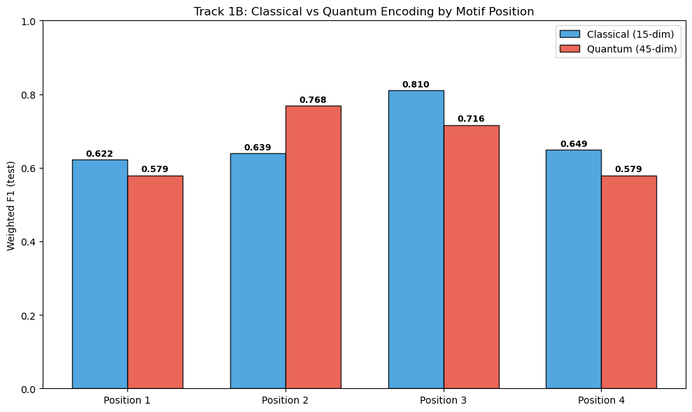
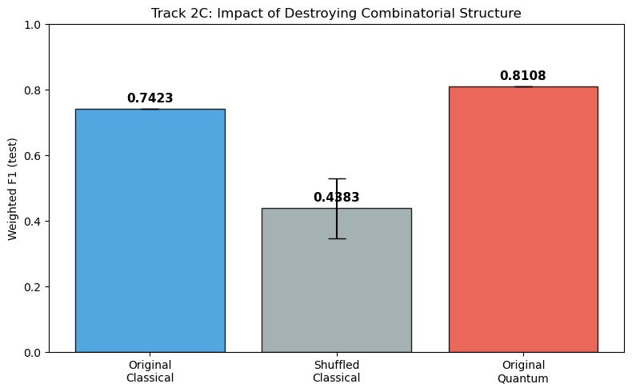
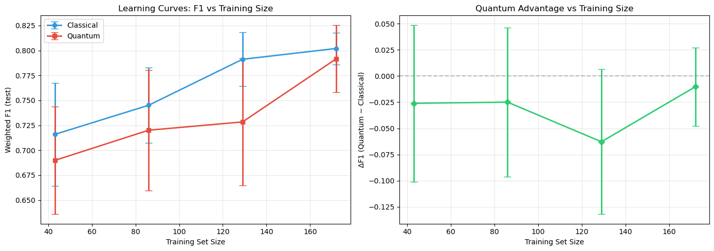

Projected Quantum Kernels for CAR T-Cell Cytotoxicity Prediction
Hugh Chow · Joshua Lee · Simran Dhankar
UW-IBM Quantum Machine Learning Hackathon
Why we expected quantum encoding to help:
Bonus — Geometric Difference:
g > 1 confirms the two encodings create different similarity structures. √N = 13.1 for reference.


1A. Measurement Basis (X vs Y vs Z)

1B. Per-Position Analysis (Classical vs Quantum)

2C. Shuffle Test — Does motif arrangement matter?

2A. Learning Curves — Does scarcity widen the gap?

Where quantum encoding hurt or didn't help:
Why these limitations exist:
How we explored the limits:
What's next?